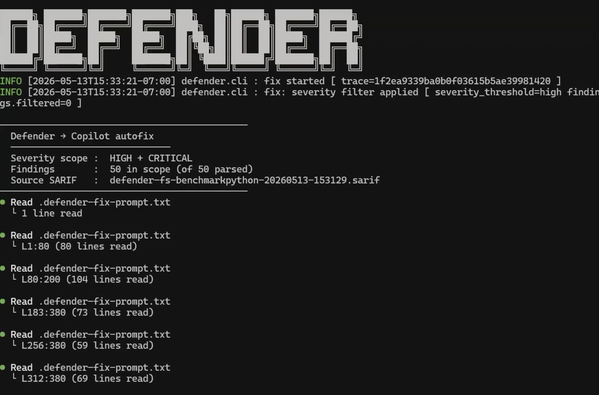
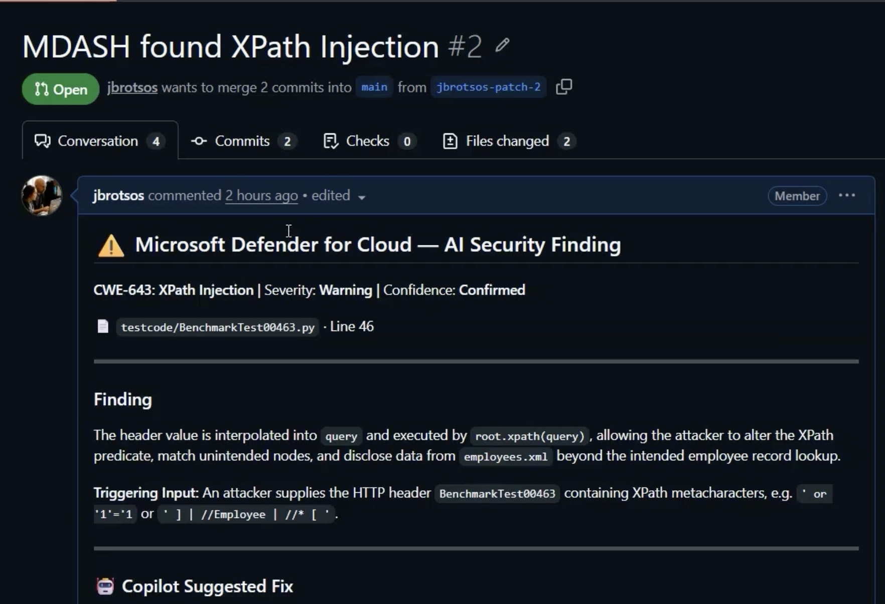

Agentic 코드 취약점 자동 수정
스캔 후 defender fix로 SARIF 결과에서 AI 기반 코드 수정본을 생성합니다. 원격(GitHub 커넥터)·로컬(CLI) 어느 경로로 스캔했든 SARIF 결과 파일만 있으면 사용할 수 있는 공통 작업이며, 변경은 검토·승인 후 반영해야 합니다.
⚠️ GitHub Copilot CLI 필요 자동 수정은 실제 코드 수정본 생성에 GitHub Copilot을 사용합니다. 따라서 GitHub Copilot CLI가 설치·인증된 환경에서만 동작하며, Copilot 구독이 없으면 이 기능은 사용할 수 없습니다. (스캔 자체 —
defender scan — 는 Copilot 없이도 실행됩니다.)사전 요구사항
- Defender CLI 설치 (Defender CLI에서 스캔 실행).
- GitHub Copilot CLI 설치·인증 — Installing GitHub Copilot in the CLI. (자동 수정 엔진으로 필수)
- 최소 1회 스캔으로 얻은 SARIF 결과 파일.
수정 적용
# 특정 SARIF 결과로 수정
defender fix ./defender-aiscan-<JOB_ID>.sarif
# 심각도 임계값 지정 (임계값 이상 모두 포함)
defender fix ./results.sarif --severity low참고 autofix는 로컬 코드 변경에 GitHub Copilot을 사용합니다. MDASH는 수정을 자동 적용하지 않으며, 제안된 변경은 반드시 개발자가 검토·검증 후 병합해야 합니다.

defender fix 실행 — Defender → Copilot autofix가 SARIF 결과(심각도 범위 내 발견)를 읽어 수정본 생성을 시작합니다.개발자 네이티브 검토
생성된 수정본은 GitHub에서 원래 발견 항목과 함께 검토·병합합니다. Copilot이 만든 PR에는 MDASH 발견(CWE·심각도·신뢰도·트리거 입력)과 제안 수정이 함께 담깁니다.
